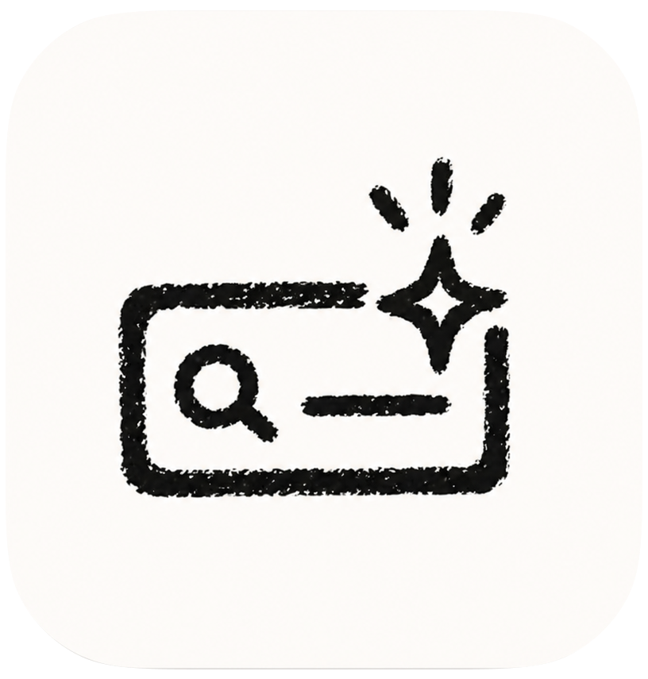

Ask AI without
leaving your work.
A lightweight palette that lives in your menu bar.
Double-tap Option/Alt — start typing.

A lightweight palette that lives in your menu bar.
Double-tap Option/Alt — start typing.